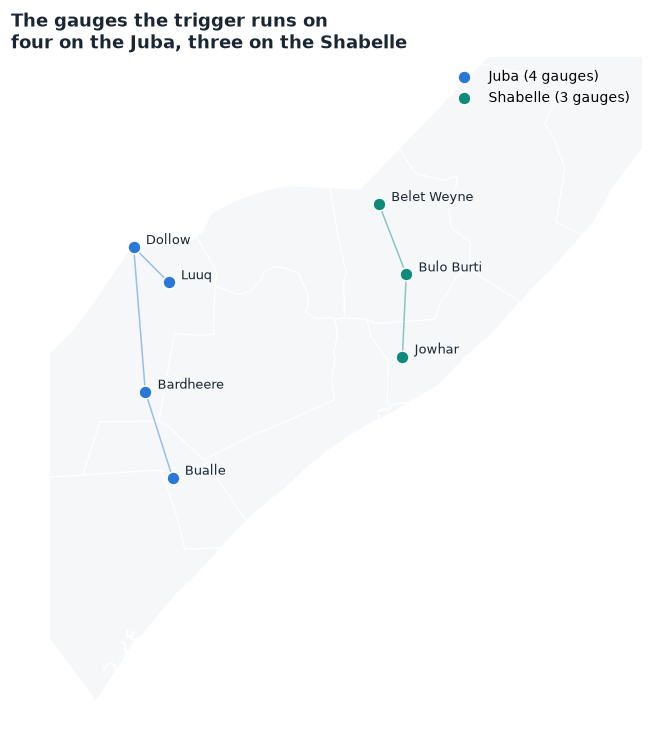
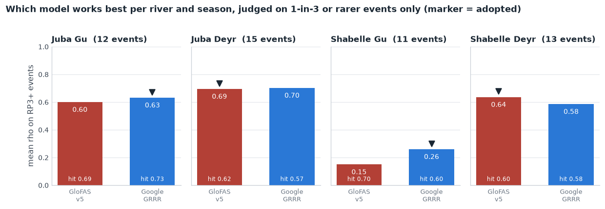
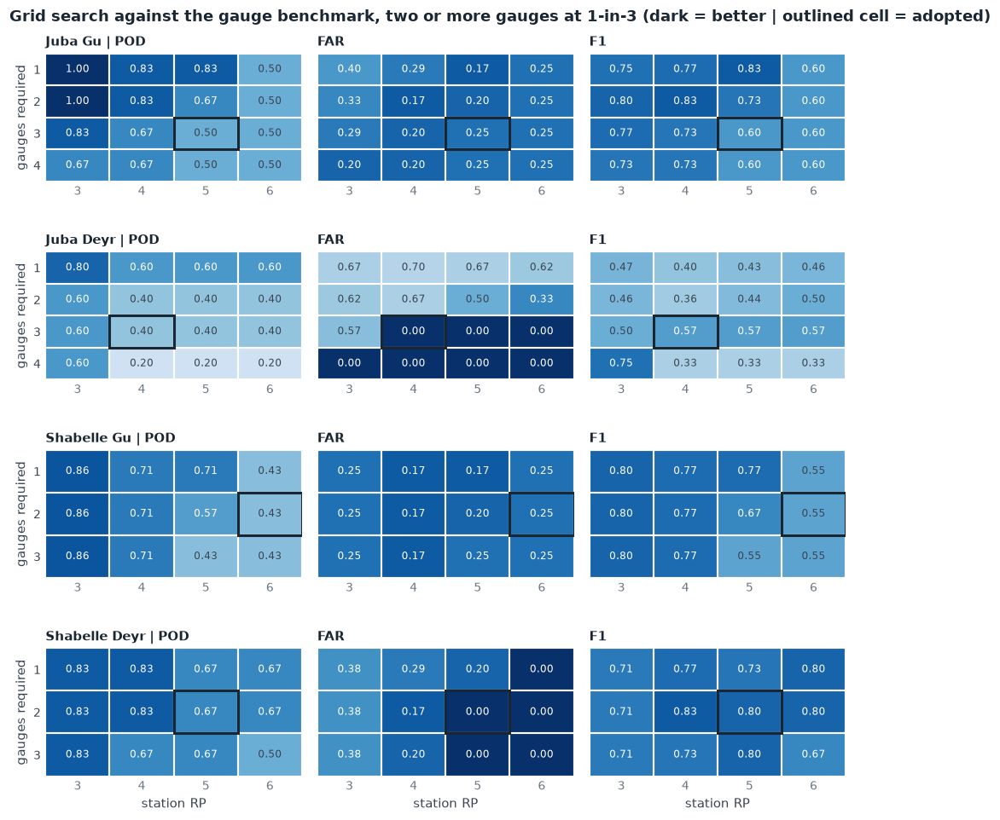
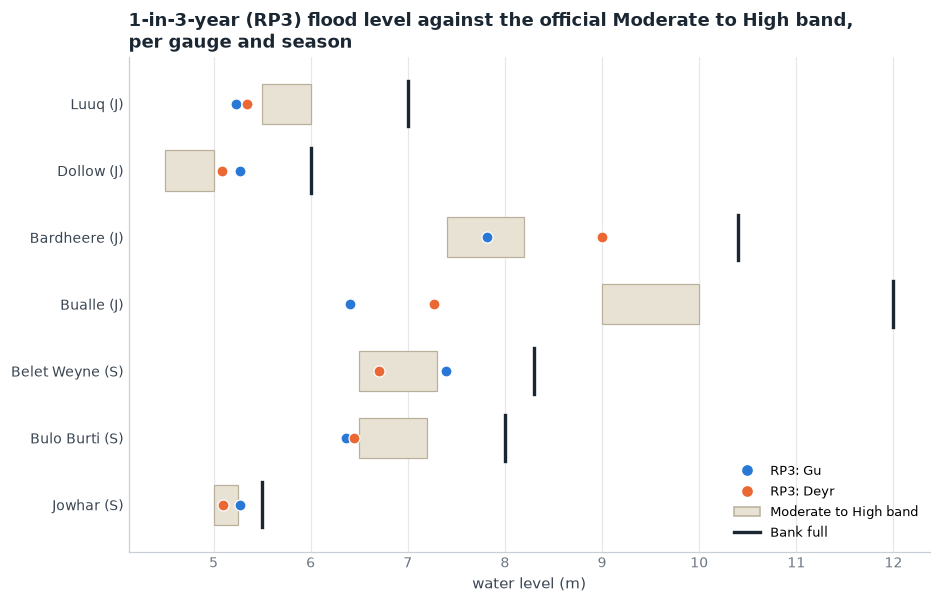
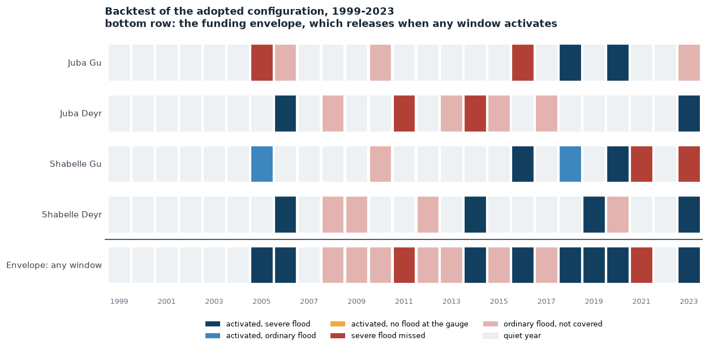

The mechanism at a glance
Four river-season windows, each running on one forecast source rather than a mixture. Inside a window, every monitored point's flow is compared with its own return-period threshold and the window fires when enough points cross in the same season. At least two points must agree, so no single point releases the money, and never all of them, so one quiet point cannot block it.
All seven reporting-era points are monitored: four on the Juba (Luuq, Dollow, Bardheere, Bualle) and three on the Shabelle (Belet Weyne, Bulo Burti, Jowhar). No threshold, on either leg, sits below 1-in-3.
| window | action trigger (leads 1-7 d) | leg RP | readiness (leads 7-12 d) | readiness RP |
|---|---|---|---|---|
| Juba Gu | Google GRRR: 3 of 4 points over their 1-in-5-yr thresholds | 6.5 yr | GloFAS v4 ens-median: 3 of 4 over 1-in-5-yr | 5.5 yr |
| Juba Deyr | Google GRRR: 3 of 4 points over their 1-in-5-yr thresholds | 8.7 yr | GloFAS v4 ens-median: 3 of 4 over 1-in-5-yr | 7.3 yr |
| Shabelle Gu | Google GRRR: 2 of 3 points over their 1-in-5-yr thresholds | 5.2 yr | GloFAS v4 ens-median: 2 of 3 over 1-in-5-yr | 5.5 yr |
| Shabelle Deyr | GloFAS v5: 2 of 3 points over their 1-in-5-yr thresholds | 6.5 yr | GloFAS v4 ens-median: 2 of 3 over 1-in-5-yr | 5.5 yr |
What happens without Google Flood Hub
Use the provider switch above to see it. With Google removed the windows run on GloFAS, the envelope sits at 1-in-2.9 (9 of 25 years) and severe-year coverage is 8 of 10: the same coverage, so on this evidence dropping Google costs nothing measurable.

How the model was chosen, one per window
The published mechanism let (station, provider) pairs compete freely, so one station could cast two or three votes and three providers each held a veto. Here the unit is the point, not the pair: each window takes a single source, and the only things searched are the threshold and how many points must agree.
Products are compared on best-lag Spearman correlation between their reanalysis discharge and the river's reference gauge level (Luuq for the Juba, Belet Weyne for the Shabelle), averaged over that window's points.

Thresholds and calibration
Every threshold is a return period on the product's own climatology at that point, so a product is judged on timing rather than on scale. 1-in-3 is the floor and a quarter of the record is the ceiling: on 25 years that allows 1-in-3 to 1-in-6, and 1-in-2 is not used anywhere, on either leg.


Calibrated on the reanalysis, checked on the forecasts
Refitting the same rule on the forecast archives themselves, 2003–2023, thresholds from 1-in-3 to 1-in-5. Out of the field: Google GRRR, whose archive is too short to carry a 1-in-3 threshold, so it can only be calibrated on the retrospective.
| window | source | gauge threshold | points that must agree | would have fired in |
|---|---|---|---|---|
| Juba Gu | GloFAS v4 | 1-in-3 | 2 of 4 | 2005, 2010, 2013, 2016, 2018, 2020, 2023 |
| Juba Deyr | GloFAS v4 | 1-in-5 | 3 of 4 | 2015, 2017, 2023 |
| Shabelle Gu | GloFAS v4 | 1-in-4 | 2 of 3 | 2005, 2010, 2016, 2018 |
| Shabelle Deyr | GloFAS v4 | 1-in-5 | 2 of 3 | 2010, 2013, 2019, 2020 |
Envelope 1-in-2.2 (10 of 21 years), catching 6 of the 10 severe years. This is the closest rate the forecast record supports; nothing lands on 1-in-3.
Would it have worked operationally?
Year by year, against the flood record at the reference gauges. Severe years are those the gauge recorded as 1-in-5 or rarer; ordinary floods are 1-in-3 or rarer and are deliberately not all covered at this activation rate.


Severe years missed: 2011, 2021. Years the envelope fired with no flood recorded at either reference gauge: none.
The readiness leg (7–12 days)
Readiness runs on GloFAS v4 ensemble-median forecasts at leads 7 to 12, the only archive covering that band, over the same full set of points, with thresholds refitted on that series. It releases only the mobilisation share and is held to the same floor: no threshold below 1-in-3, which is the change from the published mechanism, where readiness sat on 1-in-2 levels.
| window | readiness rule | readiness years | covers action years |
|---|---|---|---|
| Juba Gu | 3 of 4 points over 1-in-5 | 2010, 2016, 2018, 2020 | 3 of 4 |
| Juba Deyr | 3 of 4 points over 1-in-5 | 2015, 2017, 2023 | 1 of 3 |
| Shabelle Gu | 2 of 3 points over 1-in-5 | 2005, 2010, 2013, 2016 | 3 of 5 |
| Shabelle Deyr | 2 of 3 points over 1-in-5 | 2013, 2014, 2019, 2020 | 2 of 4 |
Readiness carries each window's own rule, the same votes and the same return period, refitted on the 7-to-12-day series. It is not tuned to precede activation: an action trigger may fire with no readiness phase ahead of it, which is accepted (decision 2026-08-27). The last column reports how often readiness did lead an activation, as an observation rather than a requirement.
Return-period bookkeeping
| level | trigger | activations (1999-2023) | RP |
|---|---|---|---|
| individual | Juba Gu action | 4 — 2013, 2016, 2018, 2020 | 6.5 yr |
| individual | Juba Deyr action | 3 — 2006, 2019, 2023 | 8.7 yr |
| individual | Shabelle Gu action | 5 — 2005, 2013, 2016, 2018, 2020 | 5.2 yr |
| individual | Shabelle Deyr action | 4 — 2006, 2014, 2019, 2023 | 6.5 yr |
| basin | Juba (Gu or Deyr) | 7 | 3.7 yr |
| basin | Shabelle (Gu or Deyr) | 9 | 2.9 yr |
| overall | action, either basin | 9 | 2.9 yr |
Under all-in funding, where any activation releases the full envelope, the effective return period is the overall row: 1-in-2.9 with Google, 1-in-2.9 without. The individual windows are set rarer than that on purpose, because four windows each calibrated to 1-in-3 give a union of roughly 1-in-1.5.
Open items before a trigger report
- Impact years are still undefined. The trigger is scored against gauge levels, not against recorded humanitarian impact. Until impact years exist, severe-year coverage is a proxy.
- The reanalysis cannot pick the product. Many assignments tie, so the model per window rests on lead-time skill and on operational considerations, not on the backtest.
- Google cannot be calibrated on its own forecasts. Its reforecast starts in 2016, and a 1-in-3 threshold needs about 12 years, so a Google window is necessarily calibrated on the retrospective and only checked at lead time.
- Two Juba points can no longer be verified. Bardheere's gauge record ends 2023-11-30 and Bualle's 2024-03-14. Both can still be forecast at, but neither can be checked against observations from here on.
- Readiness coverage is uneven by season, which is accepted rather than solved: at 7 to 12 days GloFAS v4 leads Gu activations more reliably than Deyr ones, so a Deyr activation may arrive with no readiness phase.